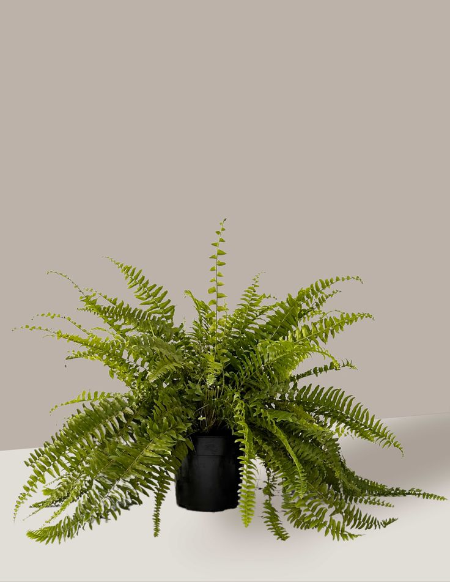

Samambaia
A samambaia é uma planta ornamental conhecida por suas longas e delicadas folhas (chamadas frondes) que se desenrolam em espirais à medida que crescem. As frondes da samambaia têm uma aparência fina, com folhas pequenas e segmentadas ao longo de um caule central, criando uma textura leve e rendada. Elas são plantas de sombra, preferindo ambientes úmidos e com luz indireta. Samambaias são frequentemente usadas em jardins, varandas e interiores, trazendo uma sensação de frescor e verde exuberante. Elas são adaptáveis, mas exigem rega frequente e solo bem drenado para se desenvolverem bem.